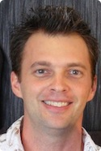

Some readers of this book will remember the programming landscape around 1993, but others will be too young, so let me tell you a few things that I remember about that time:
We debated about whether garbage collection would ever be a practical alternative to manual memory management. (This was before Java.)
We argued about whether the concept of first-class functions and closures could ever be made accessible to average programmers. (This was before JavaScript.)
And we opined at length on whether static type systems with soundness guarantees were really worth all the effort, given their inherent mathematical limitations. (This was before most programmers had heard of Haskell or ML; even after Java came out a few years later, it would be a few years more before Java got generics.)
I’ve pointed to a few technologies that seemed debatable at the time but that programmers generally take for granted now. We didn’t get from 1993 to now by programmers suddenly buying into a set of abstract arguments put forward for each technology. Partly, it was a matter of hardware performance and software scale that changed the possibilities and trade-offs. Partly, it was a matter of more and more people trying each technology and finding themselves unwilling to go back.
The idea of a programming language that can be molded by its users—I like the phrase language extensibility—is almost as old as our oldest programming languages, given the history of macros in Lisp.
So why isn’t everyone already using macros to extend languages? Like garbage collection, macros may seem like a cool idea in principle, but with too much overhead to be practical (but with the overhead in program understanding, instead of program execution). Like first-class functions, macros add an extra dimension to code that may seem too mind-twisting for an average programmer. And like a type system, the theory behind hygienic macros may seem too daunting to be worth the extra guarantees that hygiene provides. Maybe so.
But Beautiful Racket makes the case that the time for language extensibility has come. That’s why this book is important. It’s not an abstract argument about the benefits of macros or a particular style of macros. Instead, this book shows you, step by step, how to use Racket’s macro system on real problems and, as a result, get a feel for its benefits.
Whether you’re already convinced, or you’re skeptical about language extensibility and macros, the way to know for certain is to give it a try. I think you won’t want to go back.
Matthew Butterick communicates the joy that many of us feel when solving problems with extensible languages and with Racket-style macros. Beautiful Racket is an entertaining and uniquely organized book—and it gets to its point faster than you might realize. The author’s goal is to teach you to use Racket, but the very first “Racket” program starts #lang br/quicklang instead of #lang racket. So, as a reader of this book, you start out by using a custom programming language, and that’s exactly as it should be. Matthew Butterick has tried building his own languages, and he won’t go back, not even for the first page.
 Matthew Flatt is a professor in the school of computing at the University of Utah, where he works on extensible programming languages, runtime systems, and applications of functional programming. He is one of the developers of the Racket programming language and a coauthor of the introductory programming textbook How to Design Programs (MIT Press, 2001).